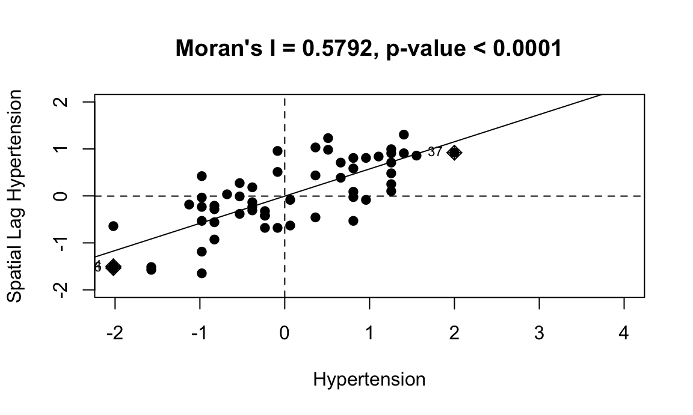
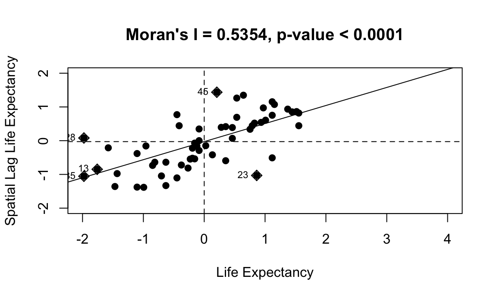

Statistical Analysis
Load data and select variables. We had to remove one community district that didn’t have any neighbors because in order to successfully run the spatial regression all community districts have to have neighbors.
Choosing dependent variables
Check linearity of the relationship between garden number and potential outcome. All outcomes have a somewhat linear association, however seems like the variance is not constant, which may lead to issues later. We tried transforming x (garden num) to log to see linear relationship but this resulted in an eventual error doing the spatial regression.
poverty_plot <-
analysis_data_final %>%
ggplot(aes(x = garden_num, y = poverty)) +
geom_point()
obesity_plot <-
analysis_data_final %>%
ggplot(aes(x = garden_num, y = obesity)) +
geom_point()
hypertension_plot <-
analysis_data_final %>%
ggplot(aes(x = garden_num, y = hypertension)) +
geom_point()
life_plot <-
analysis_data_final %>%
ggplot(aes(x = garden_num, y = life_expectancy)) +
geom_point()
self_health_plot <-
analysis_data_final %>%
ggplot(aes(x = garden_num, y = self_rep_health)) +
geom_point()
avg_rev_plot <-
analysis_data_final %>%
ggplot(aes(x = garden_num, y = avg_rev_value)) +
geom_point()
avg_appr_plot <-
analysis_data_final %>%
ggplot(aes(x = garden_num, y = avg_tot_appropriated)) +
geom_point()
poverty_plot + avg_appr_plot + avg_rev_plot + life_plot + obesity_plot + hypertension_plot + self_health_plot + plot_layout(ncol = 3)## Warning: Removed 15 rows containing missing values (geom_point).
Check normal ish distribution of outcome - all are mostly normally distributed except average revenue value. Hypertension is bimodal, not sure if we can use this moving forward.
pov_density <-
analysis_data_final %>%
ggplot(aes(x = poverty)) +
geom_density()
obes_density <-
analysis_data_final %>%
ggplot(aes(x = obesity)) +
geom_density()
hypert_density <-
analysis_data_final %>%
ggplot(aes(x = hypertension)) +
geom_density()
life_exp_density <-
analysis_data_final %>%
ggplot(aes(x = life_expectancy)) +
geom_density()
self_health_density <-
analysis_data_final %>%
ggplot(aes(x = self_rep_health)) +
geom_density()
tot_appr_density <-
analysis_data_final %>%
ggplot(aes(x = avg_tot_appropriated)) +
geom_density()
rev_value_density <-
analysis_data_final %>%
ggplot(aes(x = avg_rev_value)) +
geom_density()
pov_density + tot_appr_density + rev_value_density + life_exp_density + obes_density + hypert_density + self_health_density + plot_layout(ncol = 3)## Warning: Removed 15 rows containing non-finite values (stat_density).
Predictor: garden number Confounder: Poverty Outcomes: average total appropriated, hypertension, life expectancy, obesity, self-reported health
Test spatial autocorrelation
Check spatial dependence (non-random distribution) of variables using Moran’s I. A significant Moran’s I indicates the values are clustered and not spatially independent - therefore we should adjust for spatial parameter in our model.
###Create a queen's neighborhood weight matrix using the poly2nb command.
analysis_nbq <- poly2nb(analysis_data_spatial)
###extract coordinates to plot the connectivity matrix for visualization.
coords <- coordinates(analysis_data_spatial)
###convert the neighborhood matrix into a list so that the connections between counties can be used in Moran's I test.
analysis_nbq_w <- nb2listw(analysis_nbq)###Garden number
###Convert Exposure variable to z-form and then create the lag of that variable.
analysis_data_spatial@data$garden_num <- scale(analysis_data_spatial@data$garden_num)
analysis_data_spatial@data$lag_sQL <- lag.listw(analysis_nbq_w,analysis_data_spatial@data$garden_num)
### Lose spatial properties when we turn into data frame for analysis
analysis_sp_data <- as.data.frame(analysis_data_spatial)
###Run morans I test and plot the results.
garden_moran <- moran.test(analysis_data_spatial@data$garden_num, listw = analysis_nbq_w, zero.policy = TRUE)
broom::tidy(garden_moran)## # A tibble: 1 x 7
## estimate1 estimate2 estimate3 statistic p.value method alternative
## <dbl> <dbl> <dbl> <dbl> <dbl> <chr> <chr>
## 1 0.190 -0.0175 0.00887 2.20 0.0138 Moran I test unde… greatermoran.plot(as.vector(analysis_data_spatial@data$garden_num), listw = analysis_nbq_w,
xlim = c(-2,4),ylim = c(-2,2),
main = "Moran's I = 0.1899, p-value = 0.0138",
xlab = "Garden Number", ylab = "Spatial Lag Number of Gardens", pch = 19)###Poverty
###Convert Exposure variable to z-form and then create the lag of that variable.
analysis_data_spatial@data$poverty <- scale(analysis_data_spatial@data$poverty)
analysis_data_spatial@data$lag_sQL_p <- lag.listw(analysis_nbq_w,analysis_data_spatial@data$poverty)
### Lose spatial properties when we turn into data frame for analysis
analysis_sp_data <- as.data.frame(analysis_data_spatial)
###Run morans I test and plot the results.
moran.test(analysis_data_spatial@data$poverty, listw = analysis_nbq_w, zero.policy = TRUE)##
## Moran I test under randomisation
##
## data: analysis_data_spatial@data$poverty
## weights: analysis_nbq_w
##
## Moran I statistic standard deviate = 5.0556, p-value = 2.145e-07
## alternative hypothesis: greater
## sample estimates:
## Moran I statistic Expectation Variance
## 0.478672271 -0.017543860 0.009633691moran.plot(as.vector(analysis_data_spatial@data$poverty), listw = analysis_nbq_w,
xlim = c(-2,4),ylim = c(-2,2),
main = "Moran's I = 0.4787, p-value < 0.0001",
xlab = "Poverty", ylab = "Spatial Lag Poverty", pch = 19)
###Obesity
###Convert outcome variable to z-form and then create the lag of that variable.
analysis_data_spatial@data$obesity <- scale(analysis_data_spatial@data$obesity)
analysis_data_spatial@data$lag_sQL_o <- lag.listw(analysis_nbq_w,analysis_data_spatial@data$obesity)
### Lose spatial properties when we turn into data frame for analysis
analysis_sp_data <- as.data.frame(analysis_data_spatial)
###Run morans I test and plot the results.
moran.test(analysis_data_spatial@data$obesity, listw = analysis_nbq_w, zero.policy = TRUE)##
## Moran I test under randomisation
##
## data: analysis_data_spatial@data$obesity
## weights: analysis_nbq_w
##
## Moran I statistic standard deviate = 7.4269, p-value = 5.558e-14
## alternative hypothesis: greater
## sample estimates:
## Moran I statistic Expectation Variance
## 0.707506707 -0.017543860 0.009530619moran.plot(as.vector(analysis_data_spatial@data$obesity), listw = analysis_nbq_w,
xlim = c(-2,4),ylim = c(-2,2),
main = "Moran's I = 0.7075, p-value < 0.0001",
xlab = "Obesity", ylab = "Spatial Lag Obesity", pch = 19)
###Life Expectancy
###Convert outcome variable to z-form and then create the lag of that variable.
analysis_data_spatial@data$life_expectancy <- scale(analysis_data_spatial@data$life_expectancy)
analysis_data_spatial@data$lag_sQL_l <- lag.listw(analysis_nbq_w,analysis_data_spatial@data$life_expectancy)
### Lose spatial properties when we turn into data frame for analysis
analysis_sp_data <- as.data.frame(analysis_data_spatial)
###Run morans I test and plot the results.
moran.test(analysis_data_spatial@data$life_expectancy, listw = analysis_nbq_w, zero.policy = TRUE)##
## Moran I test under randomisation
##
## data: analysis_data_spatial@data$life_expectancy
## weights: analysis_nbq_w
##
## Moran I statistic standard deviate = 5.6454, p-value = 8.24e-09
## alternative hypothesis: greater
## sample estimates:
## Moran I statistic Expectation Variance
## 0.53543065 -0.01754386 0.00959445moran.plot(as.vector(analysis_data_spatial@data$life_expectancy), listw = analysis_nbq_w,
xlim = c(-2,4),ylim = c(-2,2),
main = "Moran's I = 0.5354, p-value < 0.0001",
xlab = "Life Expectancy", ylab = "Spatial Lag Life Expectancy", pch = 19)###Fit Preliminary Models: 1. Life expectancy = garden_num + poverty 2. Obesity = garden_num + poverty
Test baseline linear models and do spatial diagnostics to choose appropriate spatial model.
###Test baseline linear model.
obesity_lm <- lm(obesity ~ garden_num + poverty, data = analysis_data_spatial)
broom::tidy(obesity_lm)## # A tibble: 3 x 5
## term estimate std.error statistic p.value
## <chr> <dbl> <dbl> <dbl> <dbl>
## 1 (Intercept) -9.46e-17 0.0975 -9.70e-16 1.00
## 2 garden_num 9.86e- 2 0.105 9.42e- 1 0.350
## 3 poverty 6.44e- 1 0.105 6.15e+ 0 0.0000000927broom::glance(obesity_lm)## # A tibble: 1 x 12
## r.squared adj.r.squared sigma statistic p.value df logLik AIC BIC
## <dbl> <dbl> <dbl> <dbl> <dbl> <dbl> <dbl> <dbl> <dbl>
## 1 0.468 0.448 0.743 24.2 2.95e-8 2 -63.5 135. 143.
## # … with 3 more variables: deviance <dbl>, df.residual <int>, nobs <int>summary(obesity_lm)##
## Call:
## lm(formula = obesity ~ garden_num + poverty, data = analysis_data_spatial)
##
## Residuals:
## Min 1Q Median 3Q Max
## -1.7488 -0.3938 -0.0024 0.5021 1.2312
##
## Coefficients:
## Estimate Std. Error t value Pr(>|t|)
## (Intercept) -9.460e-17 9.753e-02 0.000 1.00
## garden_num 9.864e-02 1.047e-01 0.942 0.35
## poverty 6.438e-01 1.047e-01 6.148 9.27e-08 ***
## ---
## Signif. codes: 0 '***' 0.001 '**' 0.01 '*' 0.05 '.' 0.1 ' ' 1
##
## Residual standard error: 0.7428 on 55 degrees of freedom
## Multiple R-squared: 0.4677, Adjusted R-squared: 0.4483
## F-statistic: 24.16 on 2 and 55 DF, p-value: 2.95e-08life_expectancy_lm <- lm(life_expectancy ~ garden_num + poverty, data = analysis_data_spatial)
summary(life_expectancy_lm)##
## Call:
## lm(formula = life_expectancy ~ garden_num + poverty, data = analysis_data_spatial)
##
## Residuals:
## Min 1Q Median 3Q Max
## -1.42008 -0.44642 -0.01881 0.49210 1.51925
##
## Coefficients:
## Estimate Std. Error t value Pr(>|t|)
## (Intercept) -8.524e-17 9.273e-02 0.000 1.000000
## garden_num -5.043e-01 9.956e-02 -5.065 4.91e-06 ***
## poverty -3.698e-01 9.956e-02 -3.715 0.000477 ***
## ---
## Signif. codes: 0 '***' 0.001 '**' 0.01 '*' 0.05 '.' 0.1 ' ' 1
##
## Residual standard error: 0.7062 on 55 degrees of freedom
## Multiple R-squared: 0.5188, Adjusted R-squared: 0.5013
## F-statistic: 29.65 on 2 and 55 DF, p-value: 1.836e-09broom::tidy(life_expectancy_lm)## # A tibble: 3 x 5
## term estimate std.error statistic p.value
## <chr> <dbl> <dbl> <dbl> <dbl>
## 1 (Intercept) -8.52e-17 0.0927 -9.19e-16 1.00
## 2 garden_num -5.04e- 1 0.0996 -5.07e+ 0 0.00000491
## 3 poverty -3.70e- 1 0.0996 -3.71e+ 0 0.000477###Look at residuals for life expectancy:
par(mfrow = c(2,2))
plot(life_expectancy_lm)###Map residuals to see spatial dependence for the basic linear model:
resids <- residuals(life_expectancy_lm)
map.resids <- cbind(analysis_data_spatial, resids)
# we need to rename the column header from the resids file
# in this case its the 6th column of map.resids
names(map.resids)[14] <- "resids"
# maps the residuals using the quickmap function from tmap
qtm(map.resids, fill = "resids", palette = "div")###Run Langrane Multiplier tests to identify the type of spatial regression model to run.
obesity.lagrange <- lm.LMtests(obesity_lm, analysis_nbq_w, test = c("LMerr","RLMerr","LMlag","RLMlag","SARMA"))
print(obesity.lagrange)##
## Lagrange multiplier diagnostics for spatial dependence
##
## data:
## model: lm(formula = obesity ~ garden_num + poverty, data =
## analysis_data_spatial)
## weights: analysis_nbq_w
##
## LMerr = 19.253, df = 1, p-value = 1.145e-05
##
##
## Lagrange multiplier diagnostics for spatial dependence
##
## data:
## model: lm(formula = obesity ~ garden_num + poverty, data =
## analysis_data_spatial)
## weights: analysis_nbq_w
##
## RLMerr = 0.80198, df = 1, p-value = 0.3705
##
##
## Lagrange multiplier diagnostics for spatial dependence
##
## data:
## model: lm(formula = obesity ~ garden_num + poverty, data =
## analysis_data_spatial)
## weights: analysis_nbq_w
##
## LMlag = 34.342, df = 1, p-value = 4.623e-09
##
##
## Lagrange multiplier diagnostics for spatial dependence
##
## data:
## model: lm(formula = obesity ~ garden_num + poverty, data =
## analysis_data_spatial)
## weights: analysis_nbq_w
##
## RLMlag = 15.891, df = 1, p-value = 6.709e-05
##
##
## Lagrange multiplier diagnostics for spatial dependence
##
## data:
## model: lm(formula = obesity ~ garden_num + poverty, data =
## analysis_data_spatial)
## weights: analysis_nbq_w
##
## SARMA = 35.144, df = 2, p-value = 2.337e-08life_expectancy.lagrange <- lm.LMtests(life_expectancy_lm,analysis_nbq_w, test = c("LMerr","RLMerr","LMlag","RLMlag","SARMA"))
print(life_expectancy.lagrange)##
## Lagrange multiplier diagnostics for spatial dependence
##
## data:
## model: lm(formula = life_expectancy ~ garden_num + poverty, data =
## analysis_data_spatial)
## weights: analysis_nbq_w
##
## LMerr = 17.639, df = 1, p-value = 2.67e-05
##
##
## Lagrange multiplier diagnostics for spatial dependence
##
## data:
## model: lm(formula = life_expectancy ~ garden_num + poverty, data =
## analysis_data_spatial)
## weights: analysis_nbq_w
##
## RLMerr = 0.16406, df = 1, p-value = 0.6854
##
##
## Lagrange multiplier diagnostics for spatial dependence
##
## data:
## model: lm(formula = life_expectancy ~ garden_num + poverty, data =
## analysis_data_spatial)
## weights: analysis_nbq_w
##
## LMlag = 24.495, df = 1, p-value = 7.452e-07
##
##
## Lagrange multiplier diagnostics for spatial dependence
##
## data:
## model: lm(formula = life_expectancy ~ garden_num + poverty, data =
## analysis_data_spatial)
## weights: analysis_nbq_w
##
## RLMlag = 7.0196, df = 1, p-value = 0.008062
##
##
## Lagrange multiplier diagnostics for spatial dependence
##
## data:
## model: lm(formula = life_expectancy ~ garden_num + poverty, data =
## analysis_data_spatial)
## weights: analysis_nbq_w
##
## SARMA = 24.659, df = 2, p-value = 4.42e-06Fit spatial regression model
###Specify Spatial Lag Model
life_exp.lag <- spatialreg::lagsarlm(life_expectancy ~ garden_num + poverty, data = analysis_data_spatial, analysis_nbq_w, tol.solve = 1.0e-15)
###Spatial error model
life_exp.err <- spatialreg::errorsarlm(life_expectancy ~ garden_num + poverty, data = analysis_data_spatial, analysis_nbq_w, tol.solve = 1.0e-15)
###Mixed model (SARMA significant)
htn.sar <- spatialreg::lagsarlm(hypertension ~ garden_num + poverty, data = analysis_data_spatial, analysis_nbq_w, type = "mixed", tol.solve = 1.0e-15)
summary(life_exp.lag)##
## Call:spatialreg::lagsarlm(formula = life_expectancy ~ garden_num +
## poverty, data = analysis_data_spatial, listw = analysis_nbq_w,
## tol.solve = 1e-15)
##
## Residuals:
## Min 1Q Median 3Q Max
## -1.357648 -0.362085 -0.043034 0.393640 1.450865
##
## Type: lag
## Coefficients: (asymptotic standard errors)
## Estimate Std. Error z value Pr(>|z|)
## (Intercept) 0.013654 0.072043 0.1895 0.849683
## garden_num -0.433979 0.078254 -5.5458 2.927e-08
## poverty -0.238085 0.080248 -2.9669 0.003009
##
## Rho: 0.49213, LR test value: 21.678, p-value: 3.2246e-06
## Asymptotic standard error: 0.096519
## z-value: 5.0988, p-value: 3.4187e-07
## Wald statistic: 25.997, p-value: 3.4187e-07
##
## Log likelihood: -49.74222 for lag model
## ML residual variance (sigma squared): 0.30078, (sigma: 0.54844)
## Number of observations: 58
## Number of parameters estimated: 5
## AIC: 109.48, (AIC for lm: 129.16)
## LM test for residual autocorrelation
## test value: 0.40136, p-value: 0.52639###Look at residuals for life expectancy for spatial lag model:
analysis_data_spatial$residuals <- residuals(life_exp.lag)
moran.mc(analysis_data_spatial$residuals, analysis_nbq_w, 999)##
## Monte-Carlo simulation of Moran I
##
## data: analysis_data_spatial$residuals
## weights: analysis_nbq_w
## number of simulations + 1: 1000
##
## statistic = -0.041692, observed rank = 433, p-value = 0.567
## alternative hypothesis: greater###Map residuals to see spatial dependence for the spatial lag linear model:
resids <- residuals(life_exp.lag)
map.resids_spatial <- cbind(analysis_data_spatial, resids)
# we need to rename the column header from the resids file
names(map.resids_spatial)[14] <- "resids"
# maps the residuals using the quickmap function from tmap
#qtm(map.resids_spatial, fill = "resids")###Plot predictions for model
###???Notes: I decided to just go with garden number not transformed, even though it’s not super linear. The model basically works like that, and when I ran the residuals diagnostics it didn’t look too bad so maybe it’s fine? I’m not exactly sure how to plot the predictions from the spatial model.
Also how many models should we do? Because if we do a bunch I think we run into the issue of having too high of an alpha
To do:
Check that we understand the spatial diagnostics & regular diagnostics of our models: -residuals normally distributed / equal variance / not spatially correlated
-check r^2 for model fit
Clean up model output to visualize: - Table of betas and se - plot the actual linear model over data points